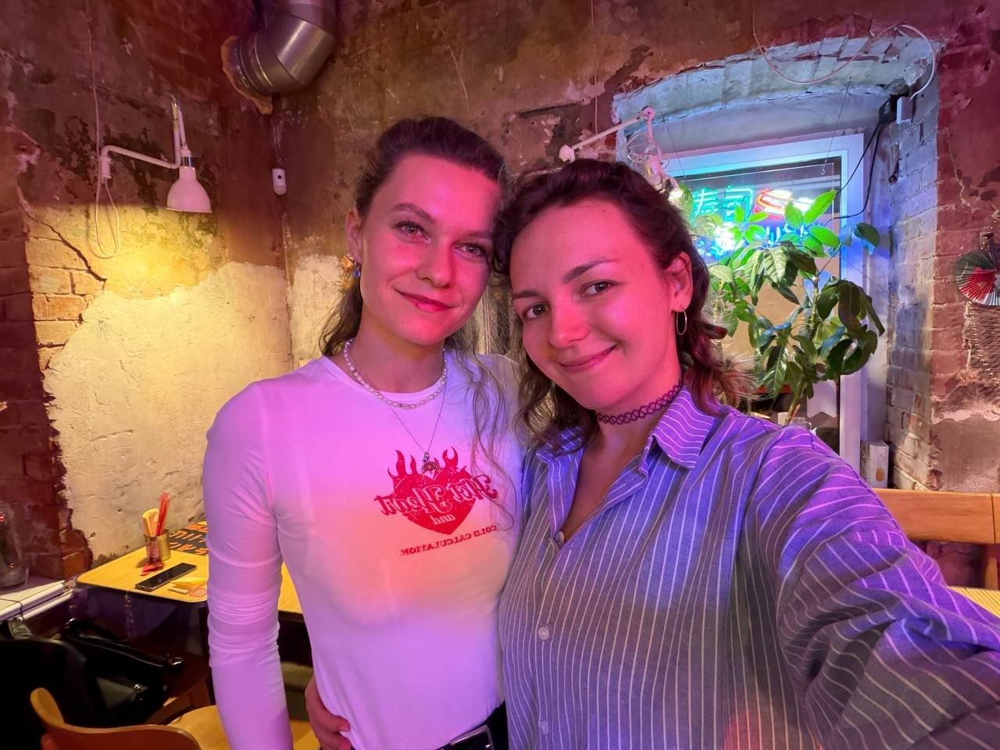
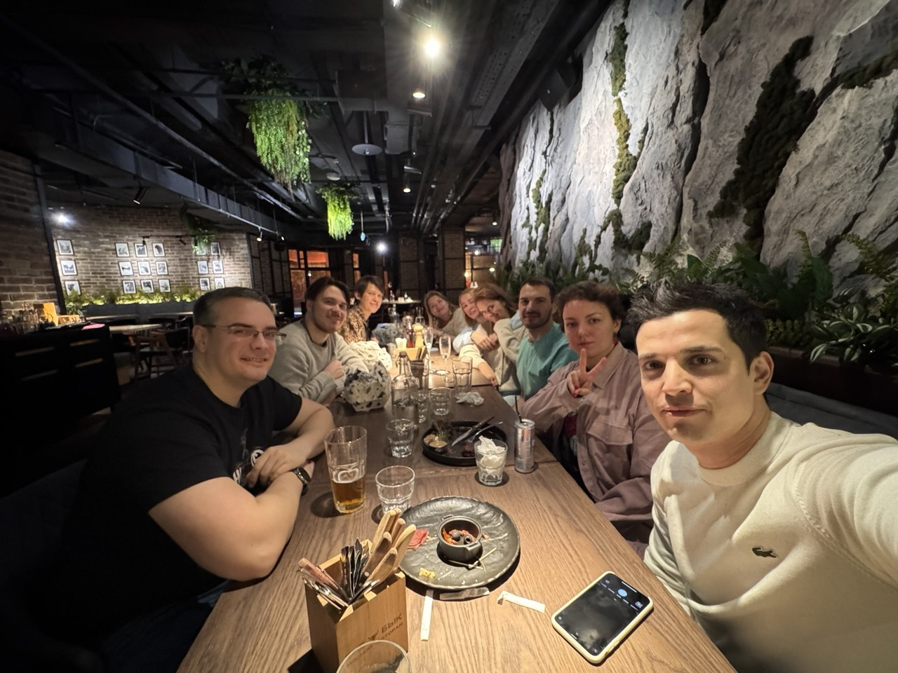

Every light is a person on their way. I design the moment they almost turn offКаждый огонёк — человек на своём пути. Я проектирую момент, когда он почти свернул
Some lights turn off and fade – bring them back with your cursorSome lights turn off and fade – bring them back with your fingerНекоторые огни сворачивают и гаснут — верните их курсоромНекоторые огни сворачивают и гаснут — верните их пальцем · back on the roadвернули0f/8 · 30s · ISO 100 · Praha
route · you board at the current stopмаршрут · посадка на текущей остановке8 years in design · payments, verification, errors8 лет в дизайне · оплата, верификация, ошибки
2025 – nowсейчас
current stopтекущая остановка
Profee
Money transfers on iOS, Android and the web: payments, verification, errors. Six stops in a rowДенежные переводы на iOS, Android и в вебе: оплата, верификация, ошибки. Шесть остановок подряд

with my favourite UX writerс любимым UX-редактором
2025
Profee · KYC
Verification moved from email into the appВерификация переехала из письма в приложение
−54%
support questions about verification, before → afterвопросы в поддержку о верификации, до → после
verification questions to support – ten scenarios run on one component
вопросов про верификацию в поддержку — десять сценариев работают на одном компоненте
earlier on the routeраньше на маршрутеa telecom and a bank’s loyalty programmeтелеком и программа лояльности банка
2023 – 2025
earlierраньше
BeelineБилайн
Product designer in one of Russia’s largest telecomsПродуктовый дизайнер в одной из крупнейших телеком-компаний

after-work hangoutпосиделки после работы
2022 – 2023
earlierраньше
SberSpasiboСберСпасибо
Lead designer. Games and tasks in Sber’s loyalty programme – in the app, then on the webВедущий дизайнер. Игры и задания в программе лояльности Сбера — в приложении, потом в вебе
up toдо×3
bonus redemption, before → after the redesignтраты бонусов до → после редизайна
Next stop – your teamСледующая остановка — ваша команда
Looking for a Senior product designer role · remote or in Prague · Czech permanent residence, no visa sponsorship neededИщу роль Senior продуктового дизайнера · удалённо или в Праге · ПМЖ в Чехии, визовая поддержка не нужна